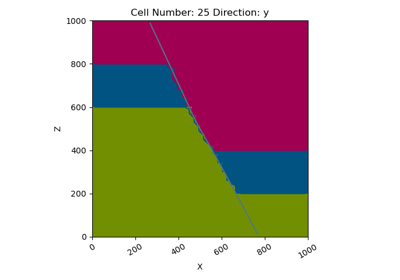

gempy.create_data¶
-
gempy.create_data(project_name: str = 'default_project', extent: Optional[Union[list, numpy.ndarray]] = None, resolution: Optional[Union[list, numpy.ndarray]] = None, **kwargs) → gempy.core.model.Project[source]¶ Create a
gempy.core.model.Projectobject and initialize some of the main functions such as:Grid
gempy.core.data.GridClass: To regular grid.read_csv: SurfacePoints and orientations: From csv files
set_values to default
- Parameters
- Keyword:
path_i: Path to the data bases of surface_points. Default os.getcwd(), path_o: Path to the data bases of orientations. Default os.getcwd()
- Returns
Project
Examples using gempy.create_data¶
